vs
Based on the woes of
Iván Sánchez Ortega, MazeMap
You might remember me from other FOSS4G talks such as
- Another game of chess, professor Falken?
- GeoGlobalDomination: The Musical
- Up all night (to get mapping)
| PARENTAL |
|---|
| BIASED OPINION |
| ADVISORY |
Timeline
- 2005: Created my own
<canvas>-based map - 2014: Worked heavily with
- 2015-01: Start working for
Timeline
- 2005: Created my own
<canvas>-based map - 2014: Worked heavily with
- 2015-01: Start working for
- 2015-03: Consider redoing the entire web app
- 2015-04-23: Submit " vs " talk
- 2015-04-27: Became a core dev
What this talk is NOT about
This talk is NOT about:
Stamen's ModestMaps
- Minimalistic (10KB!) map library
- Too basic
- No zoom animations
This talk is NOT about:
MapZen's Tangram
- WebGL goodness
- Vector tiles
- Custom shaders
- Not trivial to add own data
This talk is NOT about:
Mapbox's MapboxGL (Based on )
- WebGL goodness
- Vector tiles
- Stable, well-engineered shaders
- Depends too much on Mapbox
This talk is NOT about:
ESRI Javascript API
- Full 3D support (globe)
- Not open source
- Plays well with ESRI services, not so well with anything else
This talk is NOT about:
Google Maps API
- Full 3D support (globe)
- Not open source
- Depends too much on Google
This talk is NOT about:
- Easy, gorgeous visualizations
- Not a general-purpose mapping API
This talk is NOT about:
- Awesome data visualizations
- Extremely customizable
- Not a general-purpose mapping API
- Not trivial to add raster
- Not trivial to use standard interactions
This talk is NOT about:
- WebGL goodness
- Used for indoor maps by MazeMap's competitors
- A 3D API, not mapping API
- Not trivial to add raster
- Not trivial to use standard interactions
- Uses 3D model formats, not GIS data formats
This talk is NOT about:
IndoorGML
- No public IndoorGML implementations yet
- No public IndoorGML showcase yet
Copy-paste simplest tutorials and set coordinates for Seoul
|
|
| 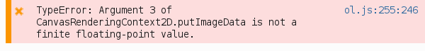 |

|
|
|
What the docs say: What you must use: |
What the docs say: 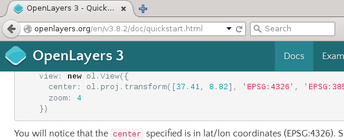What you must use: |
Newbie friendliness
|
|
Javascript
Size of minified JS files
126.5KB |
465.3KB |
Number of classes/namespaces
52 |
163 |

| 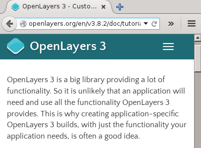 |
|
|
|
|
|
|

 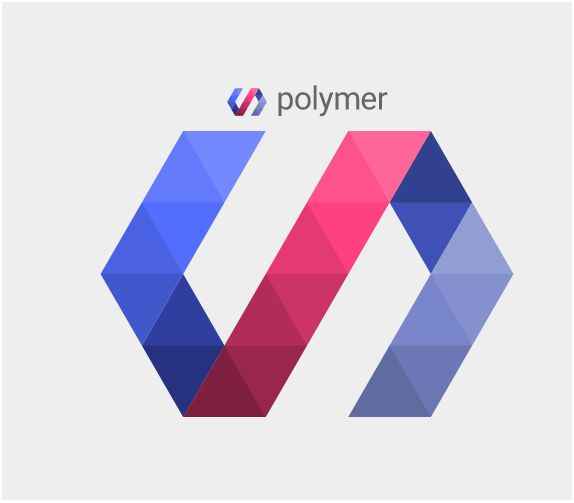
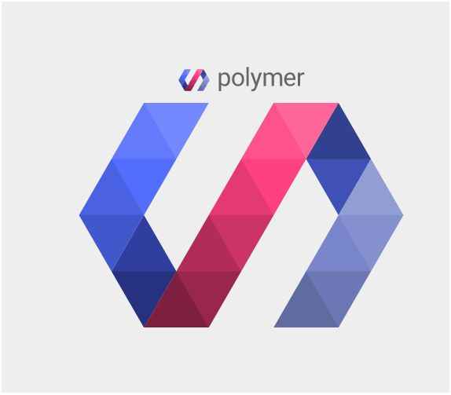
Speaking of ...
Size of unminified files:
leaflet-src.js 223.6KB |
ol3-debug.js3.5MB |
/**
* @const
* @type {number}
*/
goog.webgl.ZERO = 0;
/**
* @const
* @type {number}
*/
goog.webgl.ONE = 1;
Coding patterns
|
|
|
|
Coding patterns
|
|
|
|
Everything is...
| A wrapper over HTML elements | A model of "classic" GIS |
L.GridLayer is a grid of <div>s or <canvas>s or <img>s or even <video>s.
|
ol.Feature has a ol.geom which can be a ol.geom.LinearRing or ol.geom.MultiPoint or any Simple Features Specification type.
|
Documentation
|
|
↑ Learning curve, right there ↑
|
|
Documentation
Documentation
🍂doc
|
JSdoc
|
| 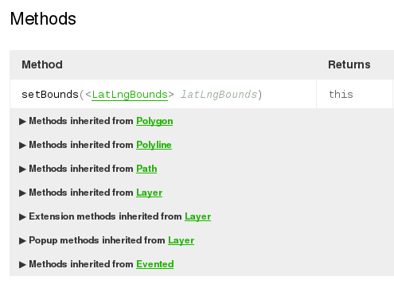 Demo! | 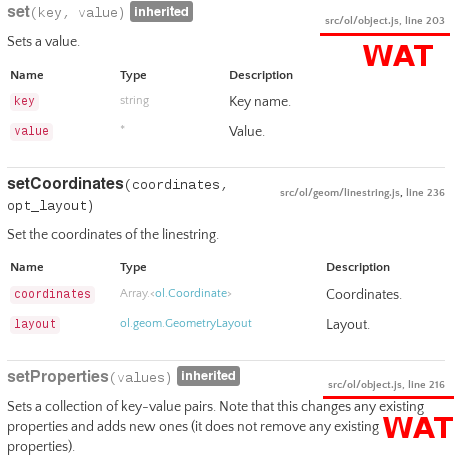 |
Something important for indoor...
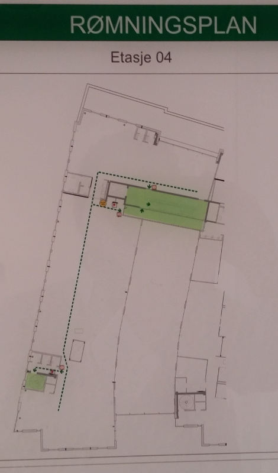 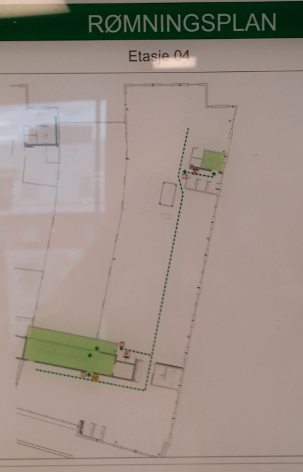Something important for indoor...
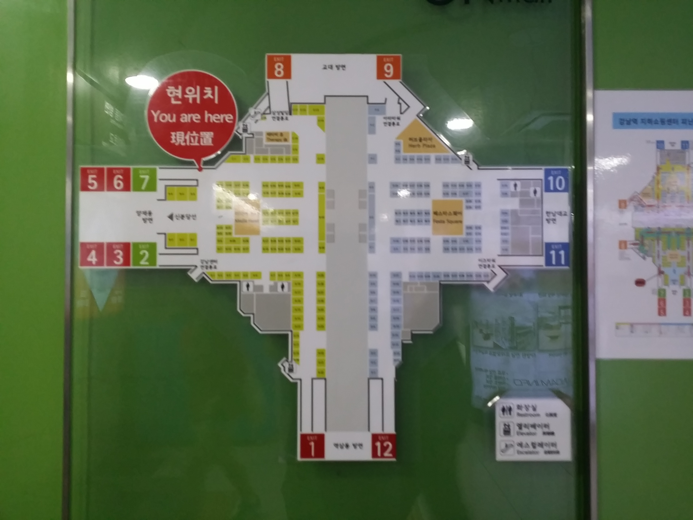 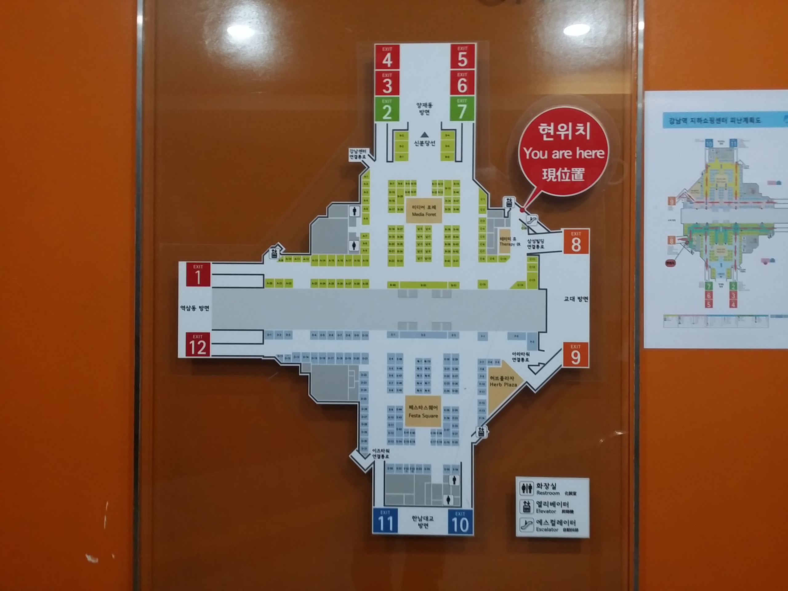Rotation
Rotation
3D
|
|
Cesium for OpenLayers
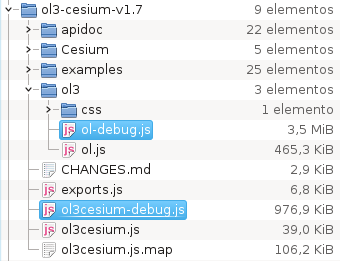
<script src='../ol3-ol-debug.js'></script>
<script src='../Cesium/Cesium.js'></script>
<script src='../ol3cesium-debug.js'></script>Cesium for OpenLayers
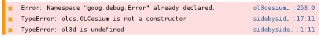
- Closure clusterf**k
Cesium for OpenLayers
- 3D that works
- No WMS layers rendered as planes at a given height over the geoid
- High cost to start developing
- Big files (not viable for deployment in mobiles)
3D
Y U NO DOEXACTLY WAT I NEED |
What's best for our indoor maps?
|
|
↑ The «Maybe we should switch to OL3» phase ↑
|
|
↑ The «Nah!» phase ↑
Some signs you might like OL3 better...
|
|
OK, so what should I use?
| ← Web | GIS → |
| ← DOM | MVC → |
|
| |
P.S.
F**k you, Internet Explorer
Fin.
¿?